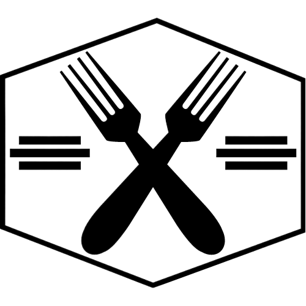

<nav class="navbar">
  <div class="navbar-brand">
    <a class="navbar-item" routerLink="/home">
      
    </a>

    <a role="button" class="navbar-burger" aria-label="menu" aria-expanded="false" data-target="rm-navbar">
      <span aria-hidden="true"></span>
      <span aria-hidden="true"></span>
      <span aria-hidden="true"></span>
    </a>
  </div>

  <div id="rm-navbar" class="navbar-menu">
    <div class="navbar-start">
      <a class="navbar-item" routerLinkActive="is-active" routerLink="/home">
        Kezdőlap
      </a>

      <a class="navbar-item" routerLinkActive="is-active" routerLink="/statistics">
        Statisztikák
      </a>

      <a class="navbar-item" routerLinkActive="is-active" routerLink="/orders">
        Rendelések
      </a>

      <a class="navbar-item" routerLinkActive="is-active" routerLink="/menu-edit">
        Étlap módosítás
      </a>

    </div>
  <div class="navbar-end">
    <div class="navbar-item">
      <div class="buttons">
        <a class="button is-primary" (click)="logOut()">
          <strong>Kijelentkezés</strong>
        </a>
      </div>
    </div>
  </div>
  </div>

</nav>
